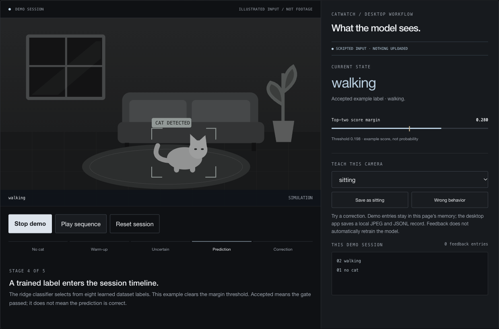

Catwatch
Understanding what the camera sees.

Detect a cat. Inspect a prediction. Correct what the model gets wrong.
Problem. A behavior label is only useful if the user can see when the model is uncertain.
Built. A local desktop app with cat detection, a session timeline, uncertainty handling, and explicit corrections. Inference runs in a worker to keep the interface responsive.
Evidence. 37.9% accuracy on 543 held-out MEOW-10K clips, compared with a 19.0% majority baseline. This measures dataset performance, not live-camera accuracy.
Scripted browser demo; no camera access or live inference.
Model evaluation & technical notes
A frozen MobileNetV3 encoder feeds a class-balanced ridge classifier over pooled visual features. On 543 held-out MEOW-10K clips, it achieved 37.9% accuracy against a 19.0% majority baseline. These dataset results do not establish live-camera accuracy.
Feedback is saved explicitly and does not automatically retrain the model. A separate earlier CLI pipeline handles rule-based events and optional AWS storage and notifications.
Python / PyTorch / YOLOv8 / PySide6 / OpenCV